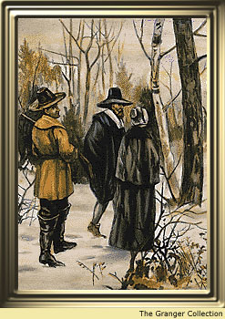

MY LIFEMy name is Elizabeth Latham. I was born in the year 1642. I am now 13 years old. I live in Dorchester, in the Massachusetts Bay Colony. My mother and father sailed from London in 1639 with my older brother and sister. They landed in Plymouth after a swift voyage of 60 days. I was the first child of my parents born on the soil of this new land. |
 |
| My Family - My Chores - My Father's House | |